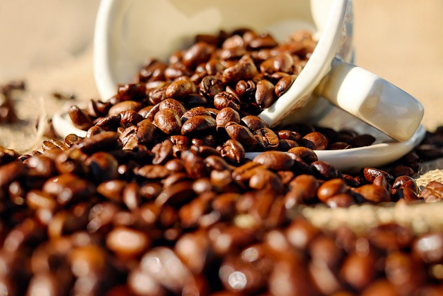
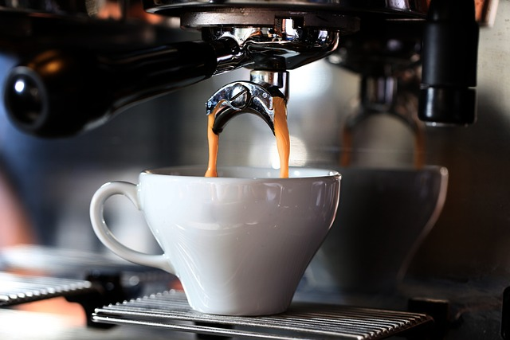
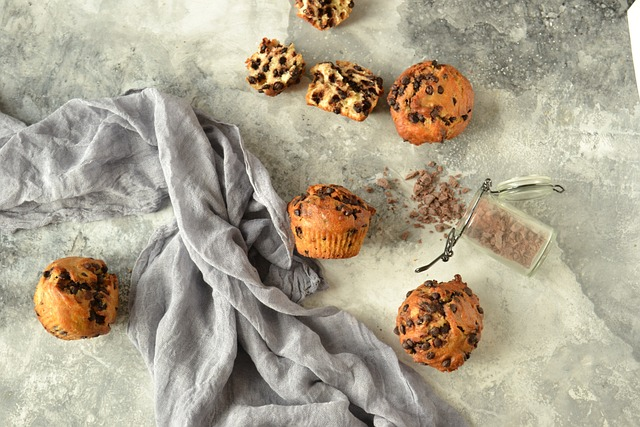

BLOGS

NEOS COFFE'NİN KAHVE ÇEKİRDEKLERİNİN SIRRI
Yüzde 100 Arabica kahve çekirdekleriyle üretilmiş çeşitleri ve alışılmışın dışında, daha geleneksel demleme yöntemleri ile aradığınız samimiyetin adresi olmaya devam ediyor.

NEOS COFFE BARİSTA EĞİTİMİ
Yüzde 100 Arabica kahve çekirdekleriyle üretilmiş çeşitleri ve alışılmışın dışında, daha geleneksel demleme yöntemleri ile aradığınız samimiyetin adresi olmaya devam ediyor.

CAFEMİZ İÇİN DEĞİŞİKLİK ÖNERİLERİ
Yüzde 100 Arabica kahve çekirdekleriyle üretilmiş çeşitleri ve alışılmışın dışında, daha geleneksel demleme yöntemleri ile aradığınız samimiyetin adresi olmaya devam ediyor.

TATLILARIMIZIN SIRRI
Yüzde 100 Arabica kahve çekirdekleriyle üretilmiş çeşitleri ve alışılmışın dışında, daha geleneksel demleme yöntemleri ile aradığınız samimiyetin adresi olmaya devam ediyor.